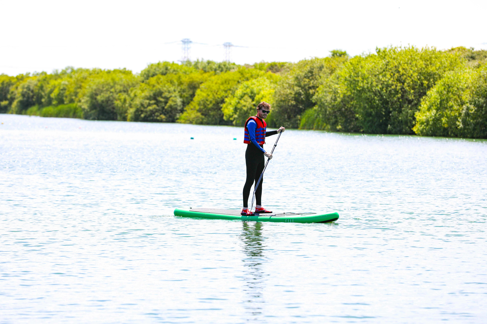

Welcome to Nature!

|
Powerboating
Activity detailsWater-based activities all take place on Lochquarry itself. Take control of one of the Centre’s two RIBs out on Lochquarry and try your hand powerboating. Max group size 6. Ages 12+ 4th July, 2026 price |
|---|---|

|
Kayaking
Activity detailsWater-based activities all take place on Lochquarry itself. Have a go at paddling, rolling and rafting in one of our brand new kayaks. Max group size 8. Ages 8+ 11th July, 2026 price |
|  | Stand-up paddleboarding
Activity detailsWater-based activities all take place on Lochquarry itself. Stand on a paddleboard, and use a single-bladed paddle to propel yourselves across water. It engages various muscle groups, improving strength, balance, and cardiovascular fitness. Max group size 8. Ages 8+ 18th July, 2026 price |

|
Canoeing
Activity detailsWater-based activities all take place on Lochquarry itself. Work single-handedly or in pairs to canoe the length of Lochquarry. You can even take a picnic with you and explore some of the Loch’s islands. Max group size 8 boats (up to 16 people). Ages 6+ 25th July, 2026 price |
If you need advice, please feel free to contact us.